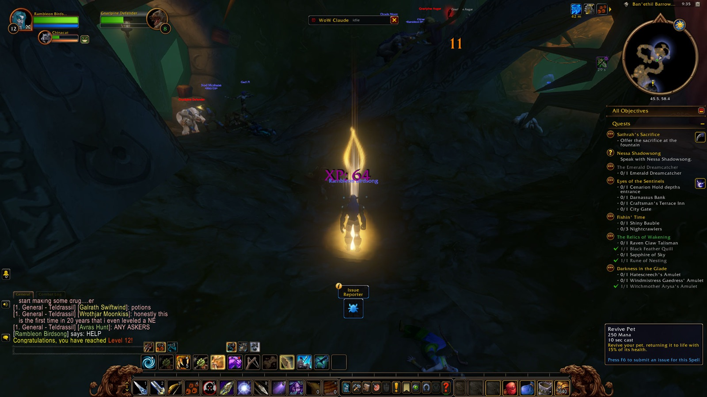
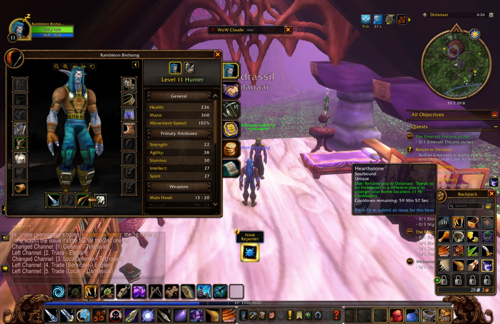
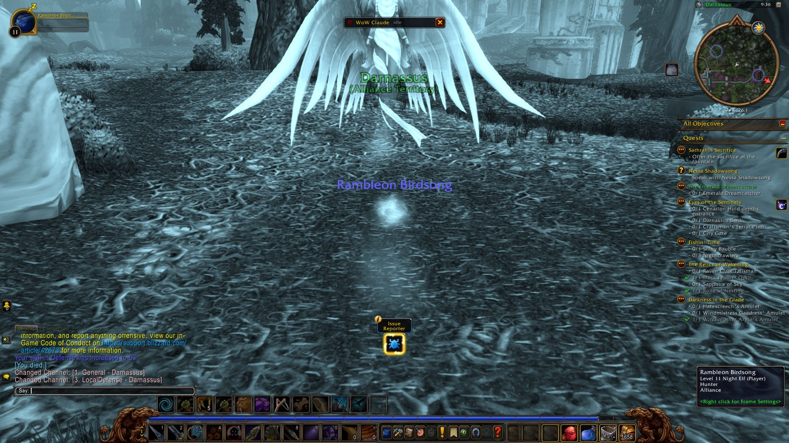
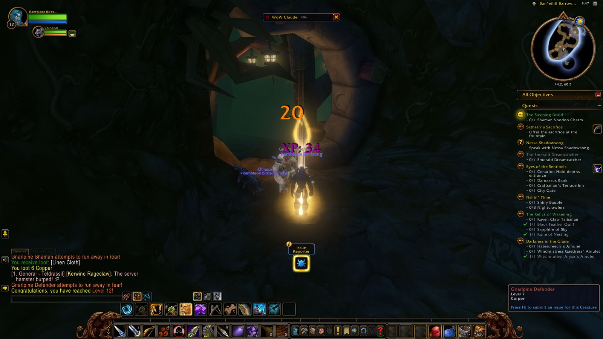

Rambleon began, as every young hunter of Teldrassil must, beneath the boughs of Darnassus, and from there let the road carry him down into Dolanaar and out along the winding paths of the island itself. He circled back through Shadowglen and Aldrassil more than once that evening, the way a student circles a familiar lesson before it finally settles — errands for the glen's elders, small and necessary, the kind that ask nothing more of a hunter than patience and a keen eye. It was there, amid that comfortable back-and-forth, that he fell in with Cassidy, a druid whose company would stay with him nearly the whole night through.
Together they pushed on to Shadowthread Cave, where Rambleon claimed a webwood egg and the fang of something called Githyiss, small trophies that opened doors to larger tasks. Tenaron's summons led to Denalan's business with a crystal phial, filled and refilled and carried at last back to Corithras Moonrage in Dolanaar — the sort of quiet, repeated labor that builds a young Kaldorei's standing one favor at a time. By Lake Al'Ameth he tested himself against sturdier things: a Webwood Venomfang, a Timberling Trampler, an Oakenscowl whose tumor he carried off as proof of the kill, and the bark rippers that guarded the grove. A warrior named Aurel walked beside him for the briefest of moments there, just long enough to trade a nod before their paths parted again. Lasher sproutlings fell to him as he gathered dewy fronds for the Great Tree, and a nightsaber stalker crossed his path before he turned back toward Dolanaar to see the errand through.
The night's harder work waited at Ban'ethil Hollow and the Barrow Den beneath it, where Gnarlpine shaman and defender and, later, augur met his arrows in numbers — shamans and defenders again and again, the den seemingly full of them, until a rune of nesting and a black feather quill were his to show for it. It was there, mid-fight, that the familiar tug of experience settled into something more — level twelve, and Rambleon paused long enough to let a screenshot mark it, a small private pride in the Barrow Den's gloom. The den was not finished with him yet, though; twice in quick succession it killed him, and twice he woke in Darnassus to the sight of the city he'd started from, each time obliged to make the long walk back through Teldrassil to find his body and his footing again.
He came back among the living the second time with no more ceremony than the thought required, and before the night closed he had already taken on new business — something called the Sleeping Druid waiting for him in the morning. Cassidy had gone her own way by then, and Rambleon closed his eyes alone, tired in the good, earned way of a night spent mostly moving forward.


